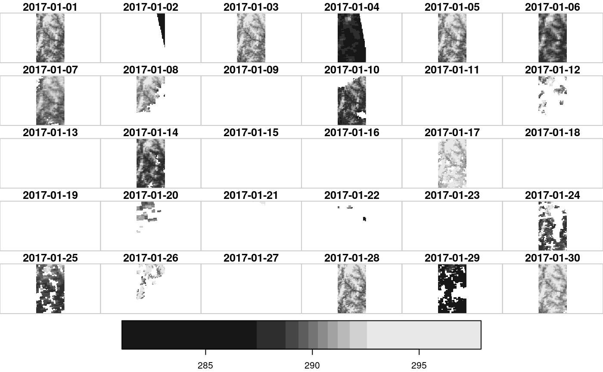
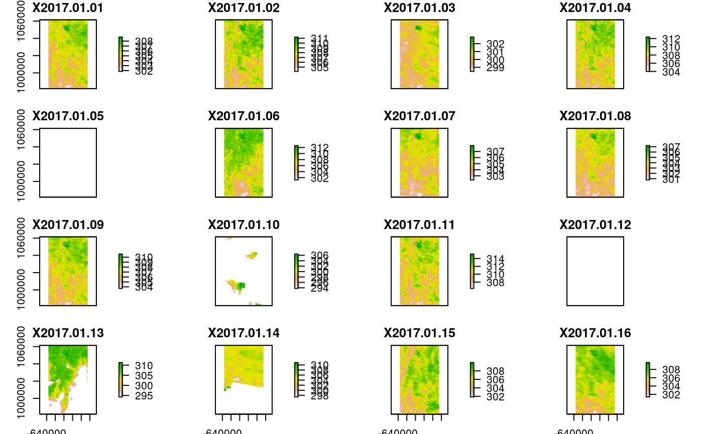

This is the main function of the package. It enables to build the URL(s) of the spatiotemporal datacube to download, given a collection, variables, region and time range of interest.
odr_get_url(collection, variables = NULL, roi, time_range, output_format = "nc4", single_netcdf = TRUE, opt_param = NULL, credentials = NULL, verbose = FALSE)
| collection | string. mandatory. Collection of interest (see details of odr_get_url). |
|---|---|
| variables | string vector. optional. Variables to retrieve for the collection of interest. If not specified (default) all available variables will be extracted (see details of odr_get_url). |
| roi | object of class |
| time_range | date(s) / POSIXlt of interest . mandatory. Single date/datetime or time frame : vector with start and end dates/times (see details). |
| output_format | string. Output data format. optional. Available options are : "nc4" (default), "ascii", "json" |
| single_netcdf | boolean. optional. Get the URL either as a single file that encompasses the whole time frame (TRUE) or as multiple files (1 for each date) (FALSE). Default to TRUE. Currently enabled only for MODIS and VIIRS collections. |
| opt_param | list of optional arguments. optional. (see details). |
| credentials | vector string of length 2 with username and password. optional. |
| verbose | boolean. optional. Verbose (default FALSE) |
a data.frame with one row for each dataset to download and 4 columns :
Start Date/time for the dataset
Indicative name for the dataset
https URL (OPeNDAP) of the dataset
Indicative destination file for the dataset
Argument collection : Collections available can be retrieved with the function odr_list_collections
Argument variables : For each collection, variables available can be retrieved with the function odr_list_variables
Argument time_range : Can be provided either as i) a single date (e.g. as.Date("2017-01-01")) or ii) a time frame provided as two bounding dates (starting and ending time) ( e.g. as.Date(c("2010-01-01","2010-01-30"))) or iii) a POSIXlt single time (e.g. as.POSIXlt("2010-01-01 18:00:00")) or iv) a POSIXlt time range (e.g. as.POSIXlt(c("2010-01-01 18:00:00","2010-01-02 09:00:00"))) for the half-hourly collection (GPM_3IMERGHH.06). If POSIXlt, times must be in UTC.
Argument single_netcdf : for MODIS and VIIRS products from LP DAAC: download the data as a single file encompassing the whole time frame (TRUE) or as multiple files : one for each date, which is the behavious for the other collections - GPM and SMAP) (FALSE) ?
Argument opt_param : list of parameters related to the queried OPeNDAP server and the roi. See odr_get_opt_param for additional details. The parameter can be retrieved outside the function with the function odr_get_opt_param. If not provided, it will be automatically calculated within the odr_get_url function. However, providing it fastens the processing time.
It might be particularly useful to precompute and provide it in case the function is used within a loop for the same ROI.
Argument credentials : Login to the OPeNDAP servers is required to use the function. odr_login can be done either within the function or outside with the function odr_login
#>#> #>#> #> #>require(raster)#>#>#> #>#> #> #>require(stars)#>#>### First odr_login to EOSDIS Earthdata with username and password. # To create an account go to : https://urs.earthdata.nasa.gov/. username <- Sys.getenv("earthdata_un") password <- Sys.getenv("earthdata_pw") log <- odr_login(credentials = c(username,password), source = "earthdata")#> Checking credentials... #> Successfull login to earthdata### Retrieve the URLs (OPeNDAP) to download the following datasets : # MODIS Terra LST Daily (MOD11A1.006) (collection) # Day + Night bands (LST_Day_1km,LST_Night_1km) (variables) # over a 50km x 70km region of interest (roi) # for the time frame 2017-01-01 to 2017-01-30 (30 days) (time_range) roi = st_as_sf(data.frame( geom="POLYGON ((-5.82 9.54, -5.42 9.55, -5.41 8.84, -5.81 8.84, -5.82 9.54))"), wkt="geom",crs = 4326) time_range = as.Date(c("2017-01-01","2017-01-30")) ############################################################ (opendap_urls_mod11a1 <- odr_get_url(collection = "MOD11A1.006", variables = c("LST_Day_1km","LST_Night_1km"), roi = roi, time_range = time_range ))#>#>#> Warning: attribute variables are assumed to be spatially constant throughout all geometries#> time_start name #> 1 2017-01-01 MOD11A1.006.2017001_2017030.h17v08 #> url #> 1 https://opendap.cr.usgs.gov/opendap/hyrax/MOD11A1.006/h17v08.ncml.nc4?MODIS_Grid_Daily_1km_LST_eos_cf_projection,LST_Day_1km[6093:6122][55:140][512:560],LST_Night_1km[6093:6122][55:140][512:560],time[6093:6122],YDim[55:140],XDim[512:560] #> destfile #> 1 MOD11A1.006/MOD11A1.006.2017001_2017030.h17v08.nc4############################################################ ### Download the data : res_dl <- odr_download_data(opendap_urls_mod11a1) ### Import the data : ## Have a look at vignette("opendapr1) for important details regarding the data import in R. ## \url{https://ptaconet.github.io/opendapr/articles/opendapr1.html#data_import_note} modis_crs <- "+proj=sinu +lon_0=0 +x_0=0 +y_0=0 +a=6371007.181 +b=6371007.181 +units=m +no_defs" ## open as a stars object (deals with multiple dimensions and time) (mod11a1_stars <- read_stars(opendap_urls_mod11a1$destfile) %>% st_set_crs(modis_crs))#> Warning: GDAL Message 1: No UNIDATA NC_GLOBAL:Conventions attribute#> LST_Night_1km,#> Warning: GDAL Message 1: No UNIDATA NC_GLOBAL:Conventions attribute#> LST_Day_1km,#> Warning: GDAL Message 1: No UNIDATA NC_GLOBAL:Conventions attribute#>#> stars object with 3 dimensions and 2 attributes #> attribute(s): #> LST_Night_1km [K] LST_Day_1km [K] #> Min. :281.1 Min. :293.8 #> 1st Qu.:289.1 1st Qu.:304.8 #> Median :290.3 Median :306.6 #> Mean :290.1 Mean :306.5 #> 3rd Qu.:291.4 3rd Qu.:308.4 #> Max. :297.9 Max. :315.1 #> NA's :67750 NA's :33597 #> dimension(s): #> from to offset delta refsys point values #> x 1 49 -637982 926.625 +proj=sinu +lon_0=0 +x_0=... NA NULL #> y 1 86 1061449 -926.625 +proj=sinu +lon_0=0 +x_0=... NA NULL #> time 1 30 2017-01-01 UTC 1 days POSIXct NA NULL #> #> x [x] #> y [y] #> timeplot(mod11a1_stars)## or open as a rasterBrick object (1 rasterBrick for each dimension) (mod11a1_rast_day <- brick(opendap_urls_mod11a1$destfile,varname="LST_Day_1km",crs=modis_crs))#>#> class : RasterBrick #> dimensions : 86, 49, 4214, 30 (nrow, ncol, ncell, nlayers) #> resolution : 926.6254, 926.6254 (x, y) #> extent : -637981.6, -592577, 981759.6, 1061449 (xmin, xmax, ymin, ymax) #> coord. ref. : +proj=sinu +lon_0=0 +x_0=0 +y_0=0 +a=6371007.181 +b=6371007.181 +units=m +no_defs #> data source : /home/ptaconet/opendapr/docs/reference/MOD11A1.006/MOD11A1.006.2017001_2017030.h17v08.nc4 #> names : X2017.01.01, X2017.01.02, X2017.01.03, X2017.01.04, X2017.01.05, X2017.01.06, X2017.01.07, X2017.01.08, X2017.01.09, X2017.01.10, X2017.01.11, X2017.01.12, X2017.01.13, X2017.01.14, X2017.01.15, ... #> Date : 2017-01-01, 2017-01-30 (min, max) #> varname : LST_Day_1km #>#> class : RasterBrick #> dimensions : 86, 49, 4214, 30 (nrow, ncol, ncell, nlayers) #> resolution : 926.6254, 926.6254 (x, y) #> extent : -637981.6, -592577, 981759.6, 1061449 (xmin, xmax, ymin, ymax) #> coord. ref. : +proj=sinu +lon_0=0 +x_0=0 +y_0=0 +a=6371007.181 +b=6371007.181 +units=m +no_defs #> data source : /home/ptaconet/opendapr/docs/reference/MOD11A1.006/MOD11A1.006.2017001_2017030.h17v08.nc4 #> names : X2017.01.01, X2017.01.02, X2017.01.03, X2017.01.04, X2017.01.05, X2017.01.06, X2017.01.07, X2017.01.08, X2017.01.09, X2017.01.10, X2017.01.11, X2017.01.12, X2017.01.13, X2017.01.14, X2017.01.15, ... #> Date : 2017-01-01, 2017-01-30 (min, max) #> varname : LST_Night_1km #>plot(mod11a1_rast_day)#> [1] "2017-01-01" "2017-01-02" "2017-01-03" "2017-01-04" "2017-01-05" #> [6] "2017-01-06" "2017-01-07" "2017-01-08" "2017-01-09" "2017-01-10" #> [11] "2017-01-11" "2017-01-12" "2017-01-13" "2017-01-14" "2017-01-15" #> [16] "2017-01-16" "2017-01-17" "2017-01-18" "2017-01-19" "2017-01-20" #> [21] "2017-01-21" "2017-01-22" "2017-01-23" "2017-01-24" "2017-01-25" #> [26] "2017-01-26" "2017-01-27" "2017-01-28" "2017-01-29" "2017-01-30"# Check out the vignettes for additional examples and more complex data import workflows